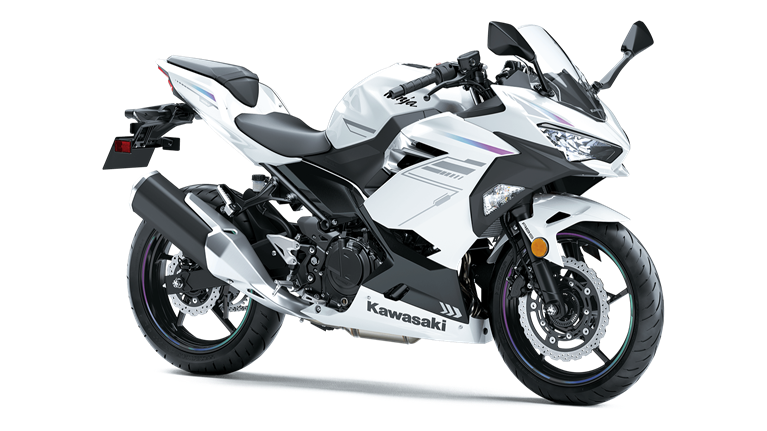
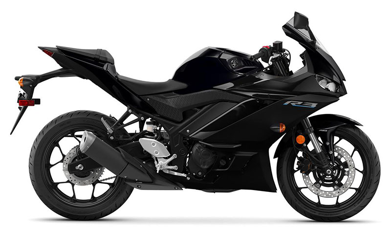

Motorcycles For Beginners
What motorcycles are best for a beginner rider?
For beginnners, it is best to start out on a bike that is 400CC's or less. Here is a short-list of a few great beginner bikes and there relative cost:
1. Kawasaki Ninja 400: $5,499

2. Honda Rebel 500: $6,499

3. Yamaha R3: $5,499
